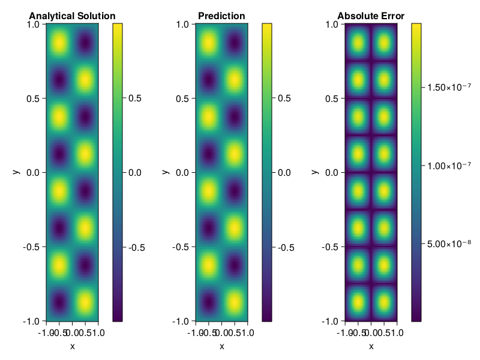

Helmholtz equation
Let us consider the Helmholtz equation in two space dimensions
\[\begin{aligned} &\Delta u(x, y)+k^{2} u(x, y)=q(x, y), \quad(x, y) \in \Omega:=(-1,1)^2 \\ &u(x, y)=0, \quad(x, y) \in \partial \Omega \end{aligned}\]
where
\[q(x, y)=-\left(a_{1} \pi\right)^{2} \sin \left(a_{1} \pi x\right) \sin \left(a_{2} \pi y\right)-\left(a_{2} \pi\right)^{2} \sin \left(a_{1} \pi x\right) \sin \left(a_{2} \pi y\right)+k^{2} \sin \left(a_{1} \pi x\right) \sin \left(a_{2} \pi y\right).\]
The excat solution is $u(x,y)=\sin{a_1\pi x}\sin{a_2\pi y}$. We chose $k=1, a_1 = 1$ and $a_2 = 4$.
using ModelingToolkit, IntervalSets, Sophon, Lux
using Optimization, OptimizationOptimJL
@parameters x,y
@variables u(..)
Dxx = Differential(x)^2
Dyy = Differential(y)^2
a1 = 1
a2 = 4
k = 1
q(x,y) = -(a1*π)^2 * sin(a1*π*x) * sin(a2*π*y) - (a2*π)^2 * sin(a1*π*x) * sin(a2*π*y) + k^2 * sin(a1*π*x) * sin(a2*π*y)
eq = Dxx(u(x,y)) + Dyy(u(x,y)) + k^2 * u(x,y) ~ q(x,y)
domains = [x ∈ Interval(-1,1), y ∈ Interval(-1,1)]
bcs = [u(-1,y) ~ 0, u(1,y) ~ 0, u(x, -1) ~ 0, u(x, 1) ~ 0]
@named helmholtz = PDESystem(eq, bcs, domains, [x,y], [u(x,y)])\[ \begin{align} \frac{\mathrm{d}}{\mathrm{d}y} \frac{\mathrm{d}}{\mathrm{d}y} u\left( x, y \right) + \frac{\mathrm{d}}{\mathrm{d}x} \frac{\mathrm{d}}{\mathrm{d}x} u\left( x, y \right) + u\left( x, y \right) =& - 166.78 \sin\left( 3.1416 x \right) \sin\left( 12.566 y \right) \end{align} \]
Note that the boundary conditions are compatible with periocity, which allows us to apply BACON.
chain = BACON(2, 1, 5, 2; hidden_dims = 32, num_layers=5)
pinn = PINN(chain) # call `gpu` on it if you want to use gpu
sampler = QuasiRandomSampler(300, 100)
strategy = NonAdaptiveTraining()
prob = Sophon.discretize(helmholtz, pinn, sampler, strategy)
@time res = Optimization.solve(prob, BFGS(); maxiters=1000)u: ComponentVector{Float64}(filters = (filter_1 = (bias = [-0.6306231020474384; -0.4808197591319223; … ; 0.6600210163981513; -0.495868797006834;;]), filter_2 = (bias = [0.41687424161539777; 0.6052408748021489; … ; 0.6508524109276557; 0.6986789382060236;;]), filter_3 = (bias = [0.6061175656655988; -0.19427595563147013; … ; 0.2723260494715128; 0.6725772118879645;;]), filter_4 = (bias = [0.6963196280803199; -0.34265359263269857; … ; 0.08963471813299421; -0.23099286488409232;;]), filter_5 = (bias = [0.9372131976247718; -0.4817478777912672; … ; 0.33502264153208733; -0.8311784428373556;;])), linear_layers = (layer_1 = (weight = [-0.02069132681889948 -0.3572801945333172 … 0.31455586043264905 0.26193051928215844; -0.08033950571636578 -0.03718334843633224 … 0.46805446521850796 -0.011697137225720994; … ; 0.040674696614196613 -0.09907034306768897 … -0.27199644785278315 0.008059579722224866; 0.021673159915351573 -0.3034480848208286 … -0.2610339250237738 0.2538254656678086], bias = [-0.022965293179548797; -0.08054249961890206; … ; -0.011467914739966919; 0.019500841256916188;;]), layer_2 = (weight = [0.295946456806163 -0.3283126169118953 … -0.10153021598111775 -0.1017943018495169; -0.42573489962195443 0.09261381028558631 … -0.3701874696909736 -0.022654891574114617; … ; 0.26218422801061564 0.1023627694670649 … -0.14662950555639365 0.19518548890310436; 0.12457384455510476 -0.29225187310352735 … -0.3252629766474723 -0.2850044676228313], bias = [0.004813665395485701; 0.019903889792447112; … ; 0.005031266573906318; -0.005330008806026297;;]), layer_3 = (weight = [-0.40221903402601894 0.48958956434186746 … 0.42968241990406564 0.029982464881408738; -0.13094716108265234 0.25368888206756046 … 0.1894389159556499 0.350367619434587; … ; 0.1700870702859072 -0.009996591524181794 … 0.43228838851317164 -0.22838598113011224; 0.22058620830456832 -0.2429475106508169 … 0.16082237657514964 -0.06539330399556777], bias = [0.006849009028076006; 0.033302249561543665; … ; 0.0009638444799929454; 0.011269004742956187;;]), layer_4 = (weight = [-0.13775405749042358 -0.3217759806600771 … -0.07136439410001152 0.3020623002944708; -0.13958789247037023 0.41180245451144915 … -0.44854019498554515 -0.31288184593201906; … ; -0.3645068633189266 -0.11062822835904879 … -0.27909124539399766 0.22379545205540652; -0.3571925568706738 0.20799613361679378 … 0.1179345323230317 0.08358996695862912], bias = [-0.0001912814192555697; -0.01273142741715367; … ; 0.006514223973519064; 0.0016552737950797922;;])), output_layer = (weight = [0.029616856205360607 -0.411535917540182 … -0.22935878655501454 0.23580676588459065], bias = [-0.034454039882287055;;]))Let's plot the result.
phi = pinn.phi
xs, ys= [infimum(d.domain):0.01:supremum(d.domain) for d in domains]
u_analytic(x,y) = sinpi(a1*x)*sinpi(a2*y)
u_real = [u_analytic(x,y) for x in xs, y in ys]
phi_cpu = cpu(phi) # in case you are using GPU
ps_cpu = cpu(res.u)
u_pred = [sum(phi_cpu(([x,y]), ps_cpu)) for x in xs, y in ys]
using CairoMakie
axis = (xlabel="x", ylabel="y", title="Analytical Solution")
fig, ax1, hm1 = heatmap(xs, ys, u_real, axis=axis)
Colorbar(fig[:, end+1], hm1)
ax2, hm2= heatmap(fig[1, end+1], xs, ys, u_pred, axis= merge(axis, (;title = "Prediction")))
Colorbar(fig[:, end+1], hm2)
ax3, hm3 = heatmap(fig[1, end+1], xs, ys, abs.(u_pred-u_real), axis= merge(axis, (;title = "Absolute Error")))
Colorbar(fig[:, end+1], hm3)
fig